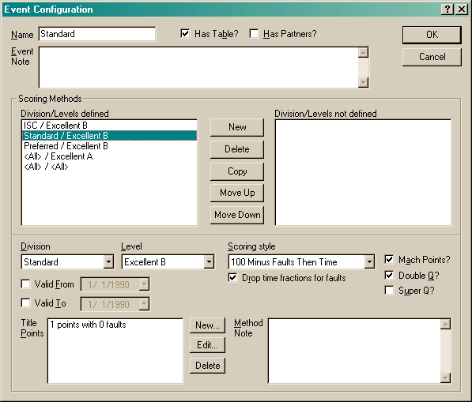
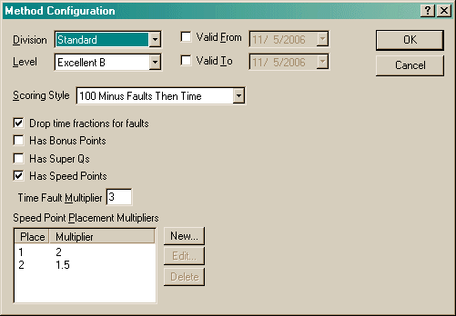
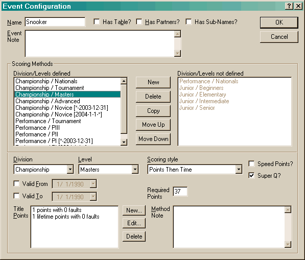
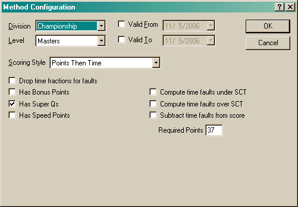
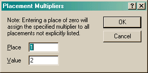
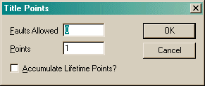
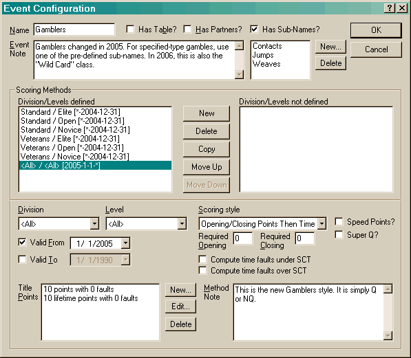
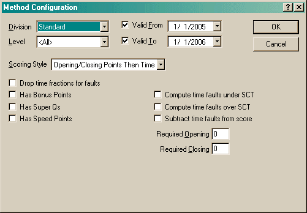

The Event Configuration dialog is probably the most complicated of the configuration dialogs. This is used to define various combinations of divisions and levels for which this event is valid. Sometimes only one method is required, though often scoring is done differently at the different levels.

The Name is a unique name identifying this event. The Event Note is a description that applies to the event as a whole.
The two checkboxes, Has Table? and Has Partners? describe certain aspects of this event. Enabling the table option will allow this run adjust the Yards Per Second in the Run Properties.
The Has Sub-Names? checkbox is used when a particular event may actually be composed of several variations. See below for more details.
The order of scoring methods is very important. When attempting to find a scoring method for a division/level, the first item that is matched will be used. So if the "<All> / <All>" method were first, no other method would ever be used.
When this dialog is brought up for a new event, the first thing you must do (after setting the above information), is to create a new scoring method with the New button. This will create a method for all divisions and levels. If you need to refine that (as with the example above), edit the entry by doing one of the following actions:

Use the Division and Level controls to select what this method is for. You can use the Copy button (previous dialog) to copy an existing scoring method - this is convenient when different methods vary only a little.
The Valid From and Valid To fields enable scoring methods to change. For instance, in 2004 USDAA introduced titling programs for the Novice and Advanced levels. In the dialog below, you can see how the number of methods increases! (This is also where the Copy button was very convenient!)
 
The Scoring Style affects what other controls will be visible. As you can see, this dialog differs slightly from the first example. The available scoring styles are:
For each of the scoring styles, there are a number of options that can be set:
The Drop time fractions for faults option is used when computing time faults - any fractions are dropped.
The Has Bonus Points option applies only to NADAC runs (at the present). This is used to identify runs where a Bonus Box may be available allowing the dog to earn 15 title points if done successfully.
The Has Super Qs option is for USDAA Snooker. It means you qualified in the top 15% of the class. Agility Record Book will not compute this for you. This is so this option could be used in other venues for similar purposes, even though the percentage may be different.
The Has Speed Points option applies only to AKC runs (at the present). Speed Points (in AKC, they are known as Mach Points) are computed as the number of whole seconds below Standard Course Time.
Associated with Speed Points are the Speed Point Placement Multipliers.
When a dog finishes a run with one of the listed placements, the number of
Speed Points earned is multiplied by the listed Multiplier.
If an entry is created with a place of 0, then that multiplier will
be applied to all entries not specifically listed. (Note, when entering
a Place in the Runs dialog, the zero entered there is not the same has the 0
entered here. Entering 0 there will not cause the 0-Multiplier to be applied.)
This special entry could allow you to configure an entry so that only the
listed places generated Speed Points (by setting the Multipler value to 0.0).
Speed Point Multipliers are modified in the following dialog:

The Title Points section shows how many title points you can earn, based on the number of faulted points incurred. In both examples above, you must run clean. In NADAC (and others), you can still qualify if you, for instance, drop a bar, but the number of titling points you earn is less. In that case, you would have multiple entries in this section. The "#" that you see in the example above means that these titling points also are accumulated in a lifetime total. In this section, the order of entries is determined by the number of faulted points. You cannot create two entries that have the same number of faulted points.
When you create or edit a Title Points entry, the following dialog will be displayed:

The Faults Allowed field allows you to specify what the maximum number of faulted points you can incur and still qualify is. The Points is the number of points you will earn. Normal is one of three types of points this may be. The other two are Lifetime and Placement points. Lifetime points are accumulated across all divisions, levels and events and displayed in the main Points View. Placement points are points you earn specifically for placing. These are currently used in FCI and FCI-related venues.
Note: If you can qualify in an event and that event has lifetime points, you must create two entries in the Title Points section (as the dialog above shows for USDAA Masters Snooker). The existence of a Lifetime point entry does not imply titling points. If you do not have a titling point entry, the Q? control in dialog to create a run will be disabled since the assumption is made that if there are no titling points available, then you cannot Qualify in that event. This is useful when you want to create an event for tracking fun-runs.
An event is configured for sub-names when multiple variations of the event exist. An example of these are NADAC's Gamblers class and the game classes in TDAA. In the NADAC example, we know all the sub-names to start with, so we can pre-configure the program with them. In TDAA, games are not pre-defined. So, we can list some initial ones, however the user must be able to enter names of new events without the need to modify this configuration. In TDAA, we will create a generic events that the user can add to.
 